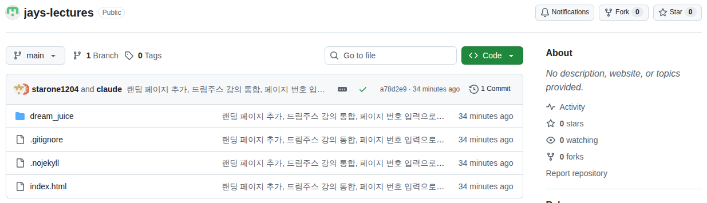

AI 문맹탈출을 위한 기본 도구 익히기 · 3강
깃허브
모든 변경을 기억하는 금고
'진짜_최종.hwp'와 작별하고, 함께 일하는 법
$ git commit -m "3강 시작"
아이스 브레이킹
혹시 여러분의
바탕화면 아닌가요? 😅
누구나 한 번쯤 이렇게 파일을 관리해 봤을 거예요. 오늘은 이 문제를 개발자들이 어떻게 해결했는지 배웁니다.
이 방식의 문제
'최종' 파일이 늘어날수록 생기는 일들
뭐가 진짜 최신이지?
'진짜최종'과 '최종_수정2' 중 어느 게 나중 건지 날짜를 뒤져야 해요.
뭘 바꿨더라?
두 파일을 나란히 띄워 놓고 틀린 그림 찾기를 해야 해요.
지난주 버전으로 돌아가고 싶은데…
저장을 덮어썼다면 영영 사라졌어요.
둘이 동시에 고쳤더니
메일로 주고받다가 동료가 고친 부분을 내가 덮어써 버렸어요.
버전 관리란?
게임의 세이브 포인트를 떠올려 보세요
🎮 게임에서는
- 보스 앞에서 저장해 둡니다
- 지면 저장한 곳에서 다시 시작
- 저장 슬롯마다 이름과 날짜가 있어요
📂 버전 관리에서는
- 작업이 한 단계 끝날 때마다 기록
- 언제든 그 시점으로 되돌아가기
- 기록마다 "무엇을 왜 바꿨는지" 메모
파일은 하나만 두고, 지난 모습은 전부 기록 속에 들어 있어요. 구글 문서의 '버전 기록'을 써 봤다면 이미 비슷한 걸 경험한 거예요.
이름부터 정리
Git과 GitHub는 다릅니다
Git (깃)
내 컴퓨터에서 변경을 기록하는 프로그램
📷 휴대폰 카메라와 갤러리: 사진을 찍고 내 폰에 보관

GitHub (깃허브)
그 기록을 올려 두는 인터넷 저장소 서비스
☁️ 구글 포토 · 아이클라우드: 백업하고, 다른 사람과 공유
Git은 혼자서도 쓸 수 있지만, GitHub에 올리면 백업 · 공유 · 협업이 됩니다. 전 세계 개발자 1억 명 이상이 쓰고 있어요.
Git 로고: Jason Long, CC BY 3.0 · GitHub 로고: GitHub, MIT · Wikimedia Commons
잠깐 상식
Git을 만든 사람은
리누스 토르발스
- 컴퓨터 운영체제 리눅스를 만든 사람이에요.
- 전 세계 수천 명이 함께 고치는 리눅스를 관리하려고 2005년에 Git을 직접 만들었어요.
- 2008년 Git을 쉽게 쓰도록 돕는 GitHub가 생겼고, 2018년 마이크로소프트가 인수했어요.
수천 명이 동시에 고쳐도 꼬이지 않게 만든 도구이니, 우리 팀 몇 명쯤은 문제없겠죠?
Part 1
Git의 핵심 개념 3가지
저장소 · 커밋 · 브랜치
개념 ① 저장소 (Repository, 레포)
저장소 = 프로젝트 폴더 + 모든 기록
- 겉보기엔 평범한 폴더예요.
- 그 안에 숨은
.git폴더가 모든 세이브 포인트를 보관해요. - 내 컴퓨터에 있는 건 로컬 저장소, GitHub에 올린 건 원격 저장소라고 불러요.
2강의 옵시디언 보관함도 저장소로 만들 수 있어요. 그러면 내 서재의 모든 변화가 기록됩니다.
개념 ② 커밋 (Commit)
커밋 = 세이브 포인트 + 한 줄 메모
📸 사진 앨범처럼
사진마다 날짜와 설명이 붙듯, 커밋마다 시간 · 작성자 · 메모가 붙어요.
⏪ 언제든 되돌리기
"11/5 상태로 돌아가 줘" 하면 그 시점의 파일이 그대로 돌아와요.
✍️ 메모가 생명
"수정함"보다 "2장 결론 문단 추가"처럼 무엇을 했는지 적어요.
기록이 GitHub에 올라가기까지
택배 보내기와 똑같은 3단계
1add · 담기
보낼 파일을 상자에 담아요.
git add 2장.md
2commit · 포장
상자를 봉하고 송장(메모)을 붙여요. 여기서 세이브 포인트가 생겨요.
git commit -m "2장 추가"
3push · 발송
상자를 GitHub로 보내요. 이제 인터넷에 백업됐어요.
git push
반대로 GitHub에 있는 최신 상자를 받아 오는 것은 pull(당기기)이라고 해요. 다른 컴퓨터에서 이어서 일할 때 씁니다.
개념 ③ 브랜치 (Branch)
브랜치 = 원본은 두고 갈라져 나온 평행세계
🌿 갈라지기
원고를 복사해 "결말 B안"을 따로 써 봐요. 원본은 안전해요.
🤝 합치기
B안이 마음에 들면 원본에 합쳐요(merge).
🗑️ 버리기
별로면 브랜치만 지우면 끝. 원본엔 흔적도 없어요.
여럿이 함께 일하기
공동 저자의 책을 만드는 과정과 같아요
3장 브랜치, 지영은 표지문구 브랜치에서 동시에 일해요. 서로 방해하지 않아요.충돌 (Conflict)
둘이 같은 문장을 다르게 고치면?
<<<<<<< 민수 그날 밤, 그는 바다로 떠났다. ======= 그날 밤, 그는 산으로 떠났다. >>>>>>> 지영
Git은 멋대로 고르지 않고 "어느 쪽으로 할까요?"라고 물어요.
- 둘 중 하나를 고르거나
- 둘을 섞어 새로 쓰면 해결
메일로 파일을 주고받을 때는 조용히 덮어써서 사라졌던 일을, Git은 꼭 알려 줍니다.
기본 명령어
이 정도만 알면 충분합니다
| 명령어 | 뜻 |
|---|---|
git init | 이 폴더를 저장소로 만들기 (처음 한 번) |
git clone 주소 | GitHub의 저장소를 내 컴퓨터로 복사해 오기 |
git status | 지금 바뀐 파일이 뭐가 있는지 보기 |
git add 파일 | 기록할 파일 담기 (모두: git add .) |
git commit -m "메모" | 세이브 포인트 만들기 |
git push / git pull | GitHub로 보내기 / GitHub에서 받아 오기 |
git log | 지금까지의 기록 보기 |
git switch -c 이름 | 새 브랜치를 만들고 그리로 이동 |
git merge 이름 | 그 브랜치를 지금 브랜치에 합치기 |
실제로는 이렇게
$ git status 수정됨: 2장.md # 2장이 바뀌었네 $ git add 2장.md # 상자에 담고 $ git commit -m "2장 마지막 문단 추가" # 송장 붙여 포장 [main 7c3e1a2] 2장 마지막 문단 추가 1 file changed, 12 insertions(+) $ git push # GitHub로 발송 To github.com:jay/my-book.git a1f2b3c..7c3e1a2 main -> main
실제 화면은 영어로 나오지만, 흐름은 이것과 똑같아요.
외울 필요 없어요
더 자세한 건 AI에게 물어보면 아주 잘 알려 줍니다
git commit --amend로 고칠 수 있어요. 제가 해 드릴까요?7c3e예요. 지금 작업은 남겨 두고 확인만 할까요, 아예 되돌릴까요?💡 요즘은 이렇게도 해요
1강의 터미널 AI에게 "커밋하고 푸시해줘"라고만 말하면, 바뀐 내용을 보고 메모까지 써서 올려 줘요.
사람은 개념을 이해하고 무엇을 기록할지 판단하면 됩니다. 명령어는 AI가 압니다.
Part 2
GitHub 시작하기
저장소 만들기 · 관리하기 · README 쓰기
저장소 만들기
GitHub에서 5단계면 끝
github.com 에서 무료 가입 (이메일만 있으면 OK)-로. 예: my-reading-notes저장소 화면 읽기 · 이 강의 자료의 실제 저장소

1 2 3 4 5저장소 관리 기본기
처음부터 알아 두면 좋은 5가지
🔓 Public / 🔒 Private
개인 메모, 원고는 Private으로. 나중에 언제든 바꿀 수 있어요.
🙈 .gitignore
올리면 안 되는 파일 목록. 비밀번호, 개인정보는 여기 적어서 제외!
✍️ 좋은 커밋 메모
"수정" ❌
"3장 도입부 사례 교체" ✅
📌 Issues
할 일·아이디어·버그를 적어 두는 게시판. 팀 할 일 목록으로 써요.
🌐 GitHub Pages
저장소를 무료 웹사이트로 공개. 지금 이 강의 자료도 이렇게 올렸어요!
🖱️ 터미널이 어렵다면
GitHub Desktop 앱으로 버튼 클릭만으로도 쓸 수 있어요.
README.md
README는 저장소의 표지이자 사용 설명서
📖 책으로 치면
- 표지와 책날개의 소개글
- "이 책을 읽는 법" 같은 머리말
- 가전제품의 사용 설명서
✅ 특징
- 저장소에 들어오면 파일 목록 아래에 자동으로 보여요
- 마크다운으로 써요 (2강 복습!)
- 사람도 읽고, AI도 가장 먼저 읽어요
처음 온 사람이 README 하나만 읽고 "이게 뭐고, 어떻게 쓰는지" 알 수 있으면 잘 쓴 거예요.
README 예시
# 📚 나의 독서 기록 2026년부터 읽은 책을 정리하는 저장소입니다. ## 무엇이 들어 있나요 - `독서노트/`: 책 한 권당 노트 하나 - `서평/`: 블로그에 올린 서평 ## 노트 쓰는 법 1. `템플릿.md`를 복사한다 2. 파일 이름은 `책제목.md` ## 만든 사람 배누사 · 매일 읽고 쓰는 사람
📚 나의 독서 기록
2026년부터 읽은 책을 정리하는 저장소입니다.
무엇이 들어 있나요
독서노트/: 책 한 권당 노트 하나서평/: 블로그에 올린 서평
노트 쓰는 법
템플릿.md를 복사한다- 파일 이름은
책제목.md
만든 사람
배누사 · 매일 읽고 쓰는 사람
README에 무엇을 쓸까
이 순서대로 채우면 기본은 합니다
PRD란?
PRD = Product Requirements Document · 만들 것의 설계도
🏠 집을 지을 때
설계도 없이 "대충 방 세 개" 하면 짓다가 계속 뜯어고쳐요.
🤖 AI에게 맡길 때
PRD를 주면 AI가 처음부터 원하는 방향으로 만들어요. README나 별도 PRD.md에 적어 둡니다.
| 항목 | 질문 |
|---|---|
| 배경 · 문제 | 왜 만드나? 지금 무엇이 불편한가? |
| 사용자 · 목표 | 누가 쓰나? 무엇이 되면 성공인가? |
| 핵심 기능 | 꼭 있어야 하는 기능 3~5개 |
| 하지 않을 것 | 이번엔 만들지 않을 것 (범위 정하기) |
PRD 예시 · 독서노트 웹페이지
# PRD: 독서노트 웹페이지 ## 배경 옵시디언에 쓴 독서노트를 독서모임 사람들과 나누고 싶은데, 파일을 일일이 보내기 번거롭다. ## 사용자와 목표 - 독서모임 회원 12명이 휴대폰으로 본다 - 새 노트를 올리면 **5분 안에** 사이트에 반영 ## 핵심 기능 1. 책 목록 (표지, 별점, 읽은 날) 2. 책을 누르면 독서노트 전체 보기 3. 태그별 모아 보기 ## 하지 않을 것 - 회원 가입, 댓글 기능
그다음은?
터미널 AI에게 "PRD.md 대로 만들어줘"
AI가 만들고 → 내가 확인하고 → 커밋으로 기록 → GitHub Pages로 공개
코드를 한 줄도 몰라도 무엇을 원하는지 글로 정확히 쓰는 능력이 있으면 됩니다. 작가에게 유리한 시대예요.
3강 전체 정리
AI와 함께 일하는 작업실이 완성됐습니다
⌨️ 터미널
작업대. AI가 내 컴퓨터에서 직접 일하는 곳
📝 마크다운 · 옵시디언
공용어와 서재. 사람과 AI가 함께 읽고 쓰는 글
🗄️ 깃허브
금고와 회의실. 모든 변경을 기록하고 함께 일하기
# 앞으로의 작업 흐름 PRD.md 쓰기 → 터미널에서 AI에게 맡기기 → 결과 확인 → 커밋 · 푸시 → 공유
용어 정리
| 용어 | 한 줄 뜻 |
|---|---|
| Git / GitHub | 변경 기록 프로그램 / 그 기록을 올려 두는 인터넷 서비스 |
| 저장소(레포) | 프로젝트 폴더 + 모든 변경 기록 |
| 커밋 | 메모가 붙은 세이브 포인트 |
| push / pull | GitHub로 보내기 / GitHub에서 받아 오기 |
| 브랜치 / merge | 갈라져 나온 작업 줄기 / 그것을 다시 합치기 |
| 풀 리퀘스트 | "내 변경을 합쳐 주세요"라는 요청과 리뷰 공간 |
| README.md | 저장소의 소개글이자 사용 설명서 |
| PRD | 무엇을 왜 누구를 위해 만드는지 적은 설계도 |
이번 주 해 볼 것
나의 첫 저장소 만들기
github.com · 아이디는 영어로, 오래 쓸 이름으로이미지 출처
- Git 로고: Jason Long, CC BY 3.0, Wikimedia Commons
- GitHub 로고(Octicons mark-github): GitHub, MIT 라이선스, Wikimedia Commons
- 리누스 토르발스 사진: Krd (사진), Von Sprat (자르기), CC BY-SA 4.0, Wikimedia Commons
- GitHub 저장소 화면: github.com/jay-nuclear-phd/jays-lectures 캡처 (2026년 11월)
- 커밋·브랜치 그림, 파일 목록, 터미널·대화 화면은 설명을 위해 직접 만든 예시입니다.